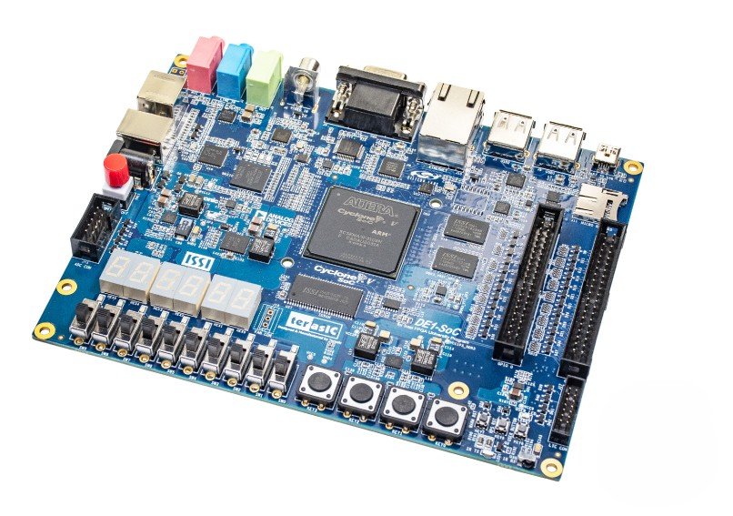
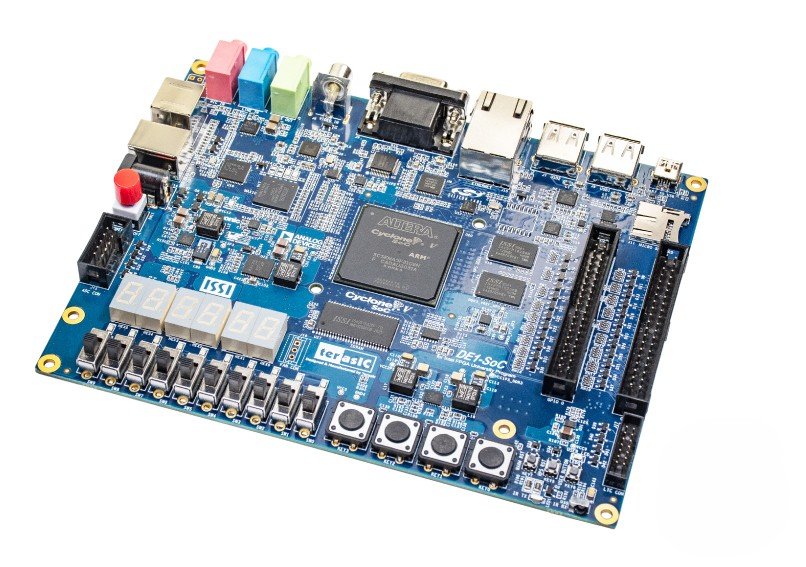

Computer Engineering Student at the University of Toronto
I’m a third‑year Computer Engineering
student at UofT, passionate about embedded systems, computer architecture, and AI, with hands‑on experience
through both academic projects and internships. I am always looking for new opportunities to apply my skills
and meet new people, so feel free to connect with me!
Experience
AI & NLP Research Intern @ ECE UofT
Building PiazzaPlus, a hybrid semantic + keyword
Piazza
search engine to improve Piazza's current search engine. Deployed as a Chrome extension for courses
across UofT. Check out the source code
here.
Recipient of Edgar McAllister Foundation
Undergraduate Summer Research Fellowship (one of two selected
across all first, second, and third-year ECE applicants). Supervised by Professor Salma Emara
May 2025 - Present
PCB Engineering Intern @ Jitterware Inc.
Designed and developed a multilayer distortion
pedal PCB prototype in KiCAD for an electric guitar,
complete with a power supply, gain knob, volume control, and tone control. Optimized PCB design for a
manufacturing cost of under $20. This distortion pedal alters an audio signal's waveform, adding that
"gritty" or "dirty" sound to it, thus creating a more aggressive tone. By applying a large amount of
gain to the signal, until it exceeds the level permitted by the pedal's circuitry, the input sound
signal clips, thereby introducing new harmonics to the tone and distorting it.
February 2025 - March 2025
Engineering Design Team Leader @ Glassopolis Inc.
Led an engineering design team to design a
wind-resistant outdoor shading product with limited
anchoring usage. Completed several engineering reports along with a professional product
proposal/presentation to the co-founder and general manager of Glassopolis Inc. Proposed design was a
three-layered rotating parasol with clover shaped leaves to disperse wind, developed in AutoCAD and 3D
printed.
Edgar McAllister Foundation Undergraduate Summer Research Fellowship
Offered by the University of Toronto's Faculty of Applied Science and Engineering, this award provides
financial support in obtaining research work experience to help develop and inspire students’ potential
for graduate studies and a research career in electrical and computer engineering. This fellowship was
awarded to two ECE students completing their first, second, or third year of studies. Academic standing
is considered. I received this award to work as a researcher under the supervision of Professor Salma
Emara.
October 2023
Lions Club Scholarship
Offered by Streetsville Secondary School, this scholarship is awarded to the top scholar of the
graduated class who is recognized for their outstanding academic achievement and contribution to the
school/community.
October 2023
Robinson's IDA Award
Offered by Robinson's IDA Pharmacy, this award is granted to the student who has the top marks in Grade
12 Math for Data Management and/or the top mark for Grade 12 Physics.
March 2023
Faculty of Applied Science and Engineering Scholarship
Offered by the University of Toronto's Faculty of Applied Science and Engineering, this award is granted
to an incoming engineering student in recognition of their achievement in secondary school.
Resume
Contact Me
Feel free to contact me through the form below or through my email/phone number!
As part of a computer organization course, a
teammate and I built a two‑player Reversi game in embedded C on a
RISC‑V (NIOS‑V) core running on the DE1‑SoC FPGA. Players interact in real time using a PS/2 mouse
to select board positions, and the game state—including score, current‑player indicator, legal‑move
highlights, and end‑game screen—is rendered at 60 FPS on a 320×240 VGA display. This project
highlights low‑level hardware–software co‑design through memory‑mapped I/O and direct framebuffer
access.
Implementation
We structured the game logic around a 2D
array to track piece placements and implemented move‑validation, score‑updating, and win‑condition
detection entirely in firmware. Mouse polling via NIOS‑V’s memory‑mapped PS/2 ports feeds cursor
coordinates into our move handler, while a custom VGA pipeline writes pixel data into a
single‑buffer framebuffer. By optimizing register access patterns and minimizing per‑frame memory
writes, we maintained a steady 60 FPS refresh without visible tearing.
As part of my Hardware Design and
Communication course, I led a team of three to designing, assembling and testing the receiver chain
for a flexible radio transceiver from scratch. The receiver that we built was integrated with five
other subsystems as part of a software-defined radio (block diagram shown on the left). My team and
I were responsible for Subsystem A.
Our receiver takes in unfiltered signals
from an antenna, and then passes them through a ±0.7V limiter circuit to protect sensitive equipment
from high voltages. Then, the limited signals are passed through a 8-16 MHz RLC bandpass filter,
since the radio frequencies of interest exist in this range. Next, the filtered signals go through
two diode ring quadrature mixers, where they are mixed with local oscillator signals, producing
in-phase and quadrature signals. This effectively downconverts the filtered RF signal from the RF
carrier frequency to the frequency band of the original message signal. High frequency components
are filtered out of these signals via a
96 kHz cutoff lowpass filter, where they are finally sent to a 30 dB gain amplifier, ready to be
demodulated by the demodulator in Subsystem B. Our overall design emphasized simplicity,
ease-of-assembly, and power efficiency. The result was that our subsystem was one out of only 23
from a total of 74 teams that was evaluated to be ready for system integration.
Design and Assembly
We began by designing the circuits for each
of the main subcomponents of the receiver. I designed the limiter and bandpass filter, keeping
ease-of-assembly and power efficiency as the main design philosophies. Next, the team simulated all
subcomponents, input system and power supplies using LTSpice. After ensuring that all subcomponents
met or exceeded the requirements given by the interface control document (ICD), we used Altium to
design the PCB layout. We placed and routed components to remain both space efficient and power
efficient. After exporting our design for manufacturing, we soldered all through-hole and
surface-mount-device components. We were now ready for testing.
Testing and Integration
Simulations showed theoretical functionality
and proof-of-concept, but we had to ensure our physical product met all ICD requirements. For this
purpose, we used a blend of manual testing and automated testing. Manual testing made use of
oscilloscopes, digital multimeters (DMMs), and waveform generators connected to our board. We
generated waveforms of varying frequencies, meant to simulate antenna and local oscillator inputs,
and observed our board's outputs. To further validate these results, we executed test scripts in
Python using the PyVISA library. Using ethernet connections, our oscilloscope, DMM and waveform
generator were hooked up to a laptop running Keysight IO Manager. The Python scripts then allowed
the measurement devices to perform amplitude and frequency sweeps, ensuring a wide range of test
points were covered for our subsystem. After passing all ICD requirements, the team was invited to
integrate our board with other successful subsystems, to produce a fully functioning
software-defined radio (shown on the left).
From absolute scratch, a teammate and I
developed a fully custom, 32-bit, multicycle RISC-V-inspired CPU implemented entirely in Verilog,
meant to run on a DE1-SoC FPGA
board. It is capable of executing core instructions, namely addi, add, sub, xor, and, or, sw, lw,
beq, and bne. The processor faithfully executes RISC-V machine code across multiple cycles for
instruction fetch, decode, execute, memory access, and write-back. To bring the design to life, we
drafted a clear microarchitecture block diagram and specification before writing the modules for the
arithmetic logic unit (ALU), register file, control unit, datapath registers and VGA display.
Implementation
Building the CPU involved coding each stage
of the multicycle datapath in Verilog, then integrating a memory-arbitration block to ensure
seamless access between the CPU and a VGA display module, since memory could only respond to one
access request at one time. The VGA module streams register contents in real time by mapping each
32-bit register value into an 8x8 bitmap font and drawing 320x240 frames over standary
horizontal/vertical sync timing. We used Quartus Prime Lite for synthesis onto the DE1-SoC FPGA
board, and emplyed ModelSim (for pre-synthesis timing analysis) and DESim (for board-accurate
simulation) to validate clock-cycle behaviour. All testbenches were written in Verilog.
Testing and Challenges
Debugging brought a lot of hurdles, notably
misleading waveform captures in ModelSim when tracing control signals, and subtle timing mismatches
that initially caused the text on the VGA to flicker and for text to go off-screen. Through
iterative inspection and incremental testbench augmentation, we identified errors and fine-tuned the
Verilog code. As a final proof of correctness, a sample Fibonacci-sequence was loaded into
instruction memory and the register traces were observed on the VGA output (shown in the GIF to the
left), confirming not only arithmetic accuracy, but memory reads/writes, branch logic, VGA
display, and memory arbitration were functioning flawlessly.
 
